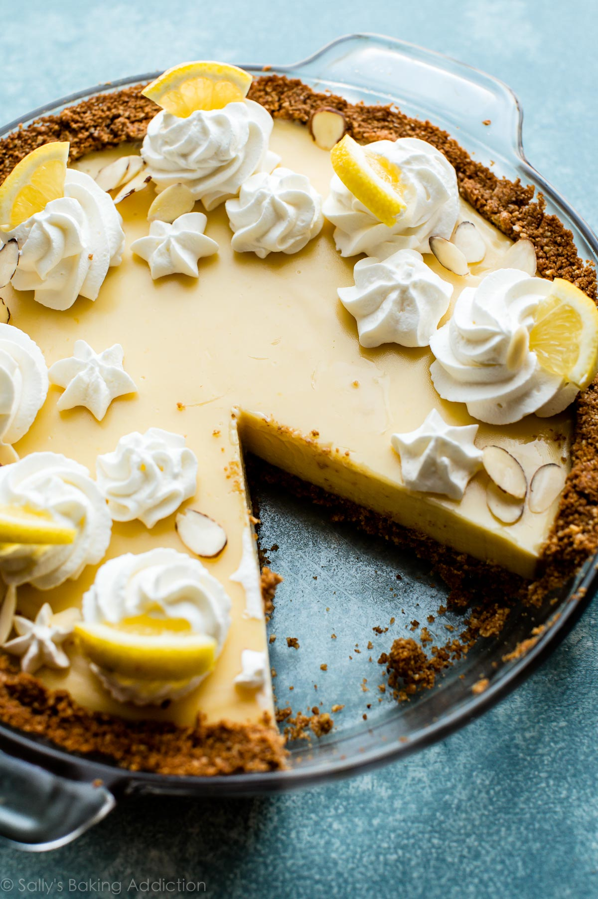

Lemon pie
 1
1 1h30
1h30 Source
Source Veggie
Veggie Sweet
Sweet Sour
Sour

Preheat the oven at 180°C.
Dough
300 gflour½ tspsalt150 gsoftened butter80 mLmilk
In a big bowl, mix flour and salt. Add the room temperature butter cutted in small cubes. Mix by hand and add milk. Keep mixing until you have a uniform dough ball. Roll out with a rolling pin and place it to a buttered pie plate. Bake in the oven for 15 minutes.
Filling
3lemons (juice and zest)3egg yolks300 mLcondensed milk
Mix about a teaspoon of lemon zest, the juice of 3 lemons the egg yolks, and the condensed milk. Pour it into the crust and bake it for 20 minutes.